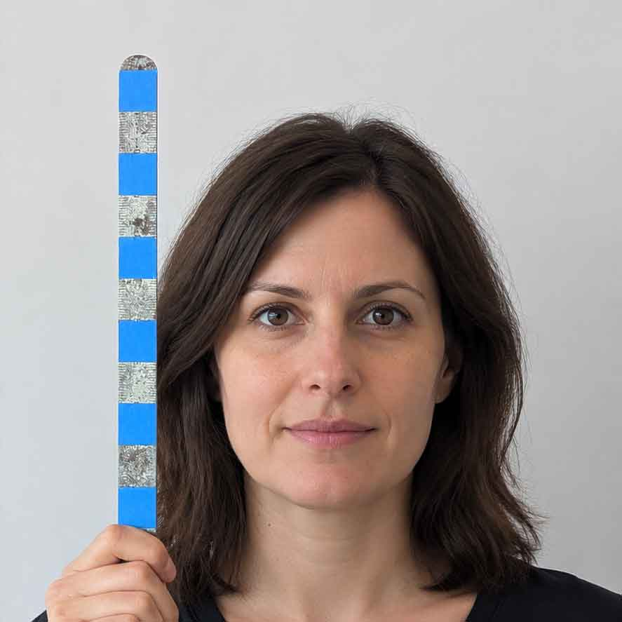
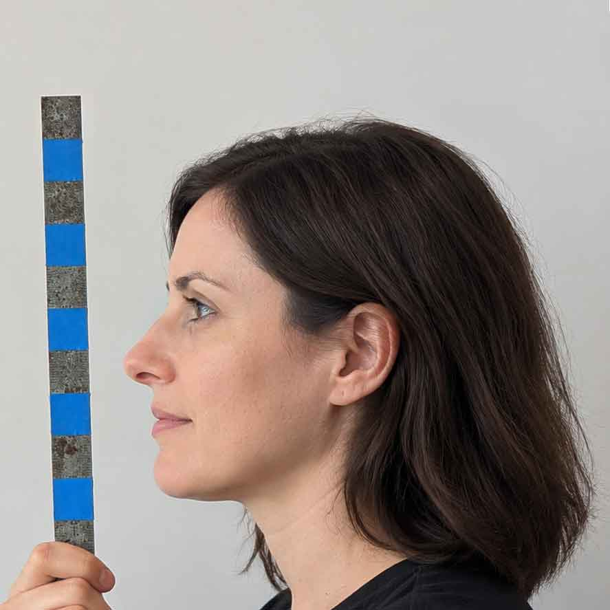
A two-day library program where you design a custom wearable mask in Blender, then build it for real — cut, scored, folded, and glued out of cardstock.
No 3D experience required. Just comfort with basic computer mouse and keyboard use, and on day two, a willingness to get a little glue on your fingers.
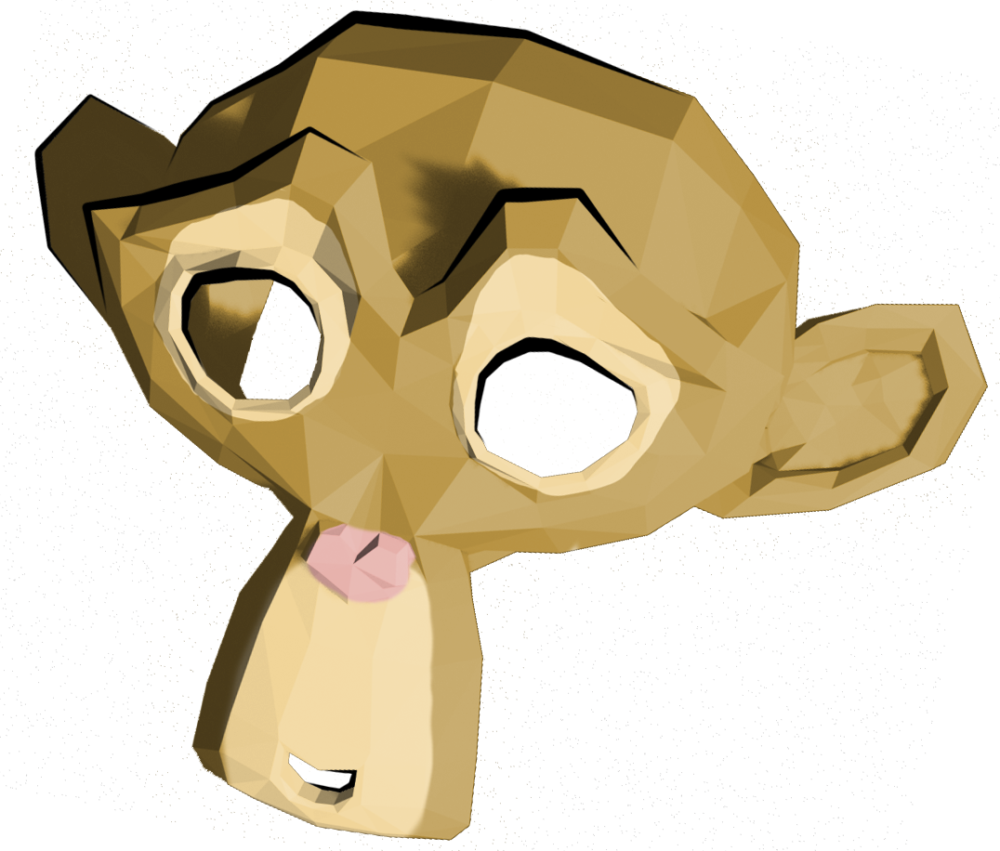
In this two-day program, participants learn the fundamentals of 3D modeling in Blender — a free, professional-grade tool used by hobbyists, indie game developers, and animation studios alike — to design a custom wearable mask. Day one puts you behind the keyboard in the Digital Media Lab, sculpting your design in three dimensions. Day two moves to the Discovery Center Makerspace, where that digital design becomes a physical mask you cut, fold, and decorate by hand.
Attend both days to take your mask from a shape on screen to a wearable object in your hands.
No experience with Blender, 3D modeling, or design software required — just reasonable comfort with a mouse and keyboard.
Sleek and futuristic, folkloric and ornate, or downright silly — the design direction is entirely up to you.
We'll spend the day in the Digital Media Lab working in Blender, a freely available, professional-grade 3D editing suite used by hobbyists, indie game designers, and Oscar-winning animation studios.
We start with the fundamentals: navigating 3D space, building up simple forms, and getting comfortable with the tools Blender gives you for pushing, pulling, and sculpting polygons. After working through an example of each tool together, you'll design a mask that's uniquely you. This isn't about getting it "right" — it's creative expression, explored on screen.
By the end of the day, we'll export your model as a flattened paper pattern — panels of triangles ready to print, similar to the patterns used to cut fabric for clothing.
Each student will need a USB drive to save the files, but thumbdrives are available for loan during the class if you do not bring your own. Bring a camera phone if you'd like to use your own face for reference. You might also want reference images if you're recreating a specific character or design.
This session takes the pattern you designed and turns it back into a 3D form — for real this time. Your printed pattern of triangles might not look like much at first, but with some careful cutting, scoring, folding, and gluing, it springs back into the very mask you designed on screen.
We'll provide lightweight cardboard, cutting tools, adhesives, and plenty of guidance as you work through each panel. It's part puzzle, part origami — hands-on, satisfying, and a great way to see how a digital design connects to the physical world.
Once your mask has taken shape, you'll move on to decoration using art materials available in the makerspace, finishing a piece that's uniquely yours: eerie and elegant, wild and colorful, or sleek and futuristic. You'll leave with a wearable, one-of-a-kind mask — and a new set of skills in 3D modeling, digital fabrication, and hands-on making.
Nothing required. If you have a specific look in mind, feel free to bring your own specialty decorating materials.
To ensure the final masks are wearable, we need to ensure we have a good sense of scale when working on the computer. These examples heads are provided in both front and side views, and include a ruler marked off in 1 inch increments. Select an example and download the pair of images in the zip file, or create your own. The files will be imported into Blender as reference images to help you scale and shape your mask.


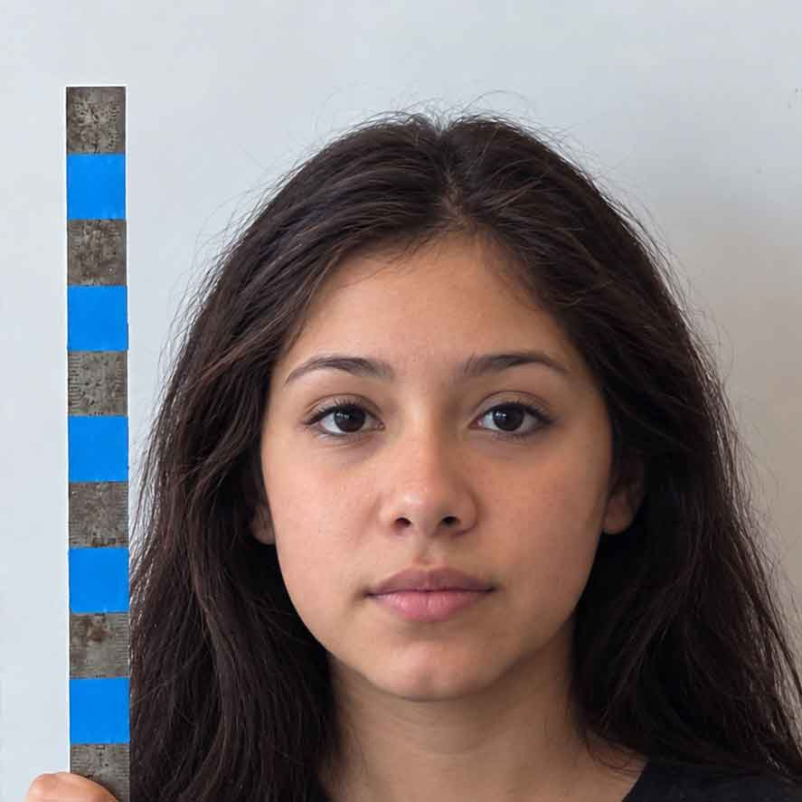
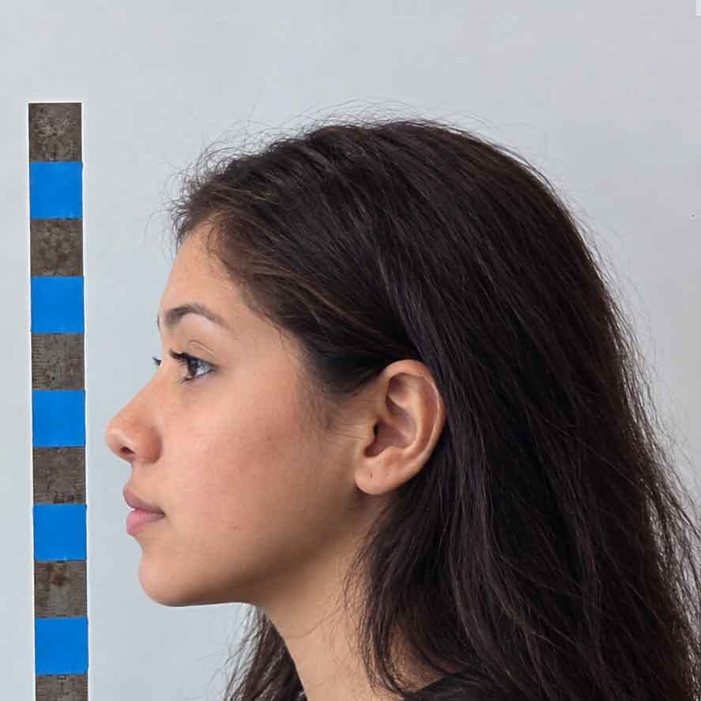
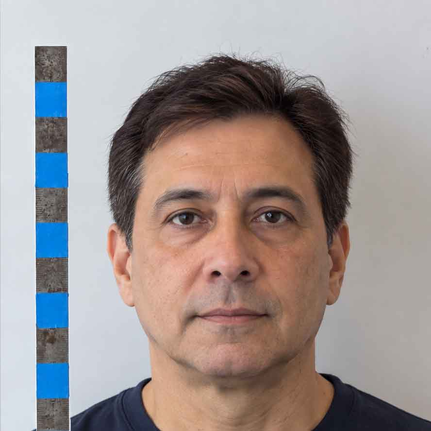
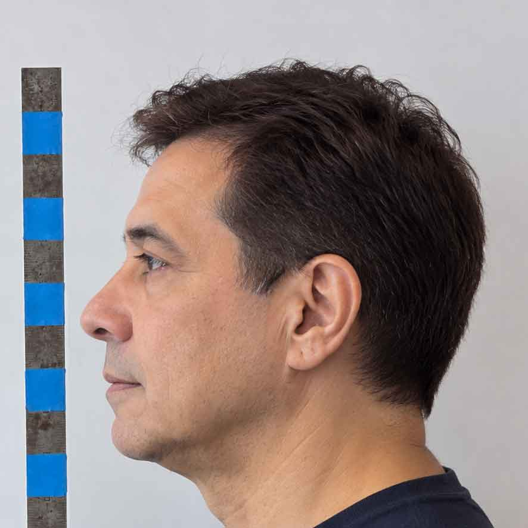
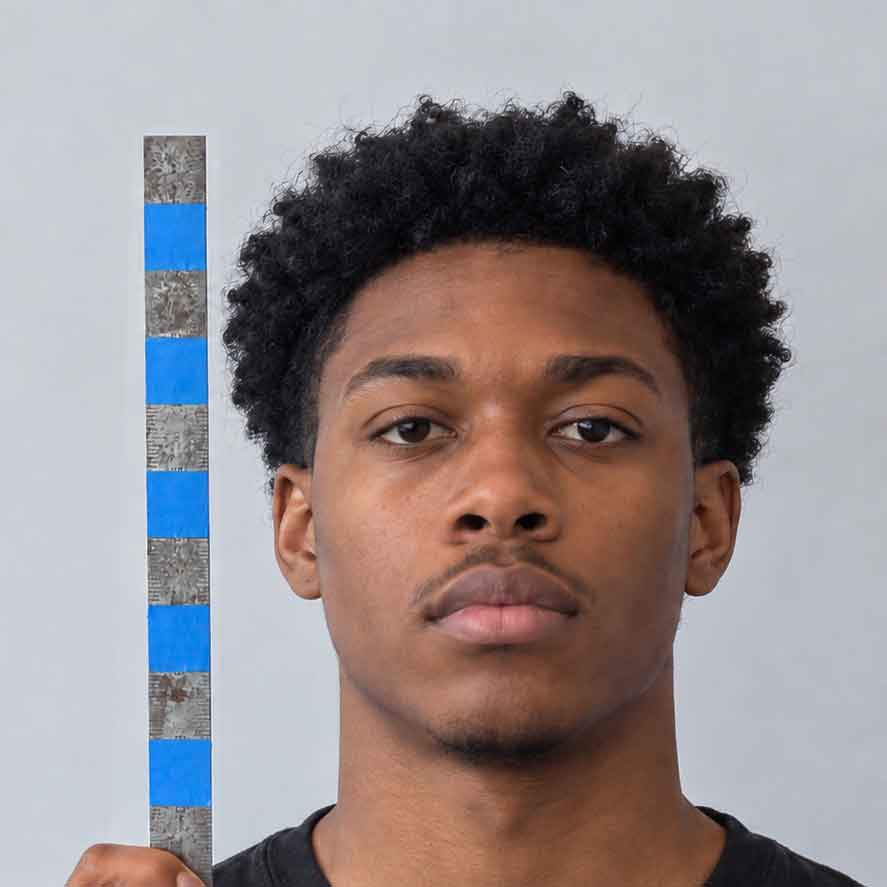
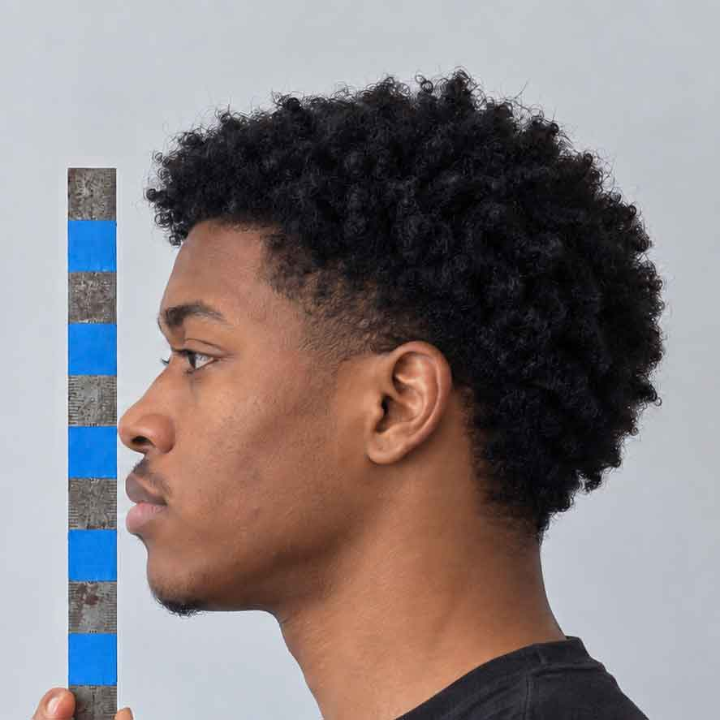
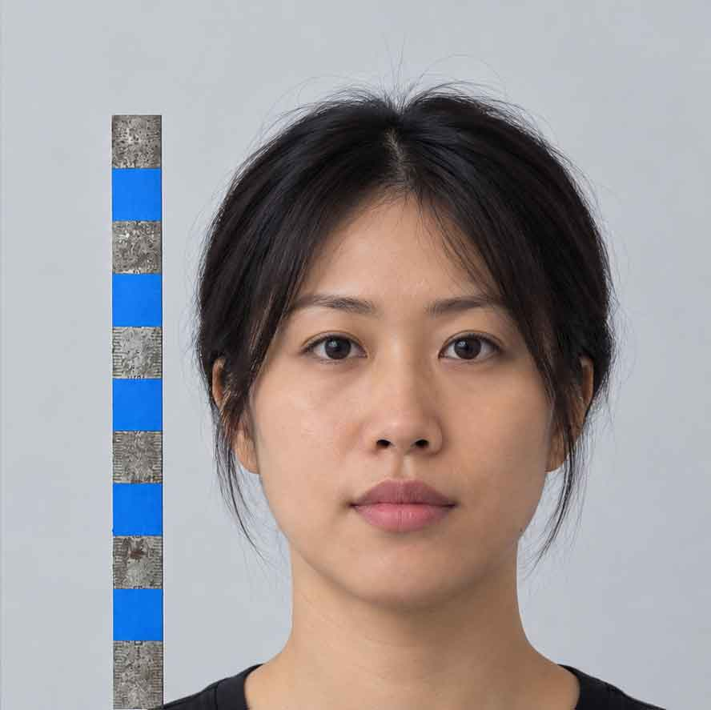
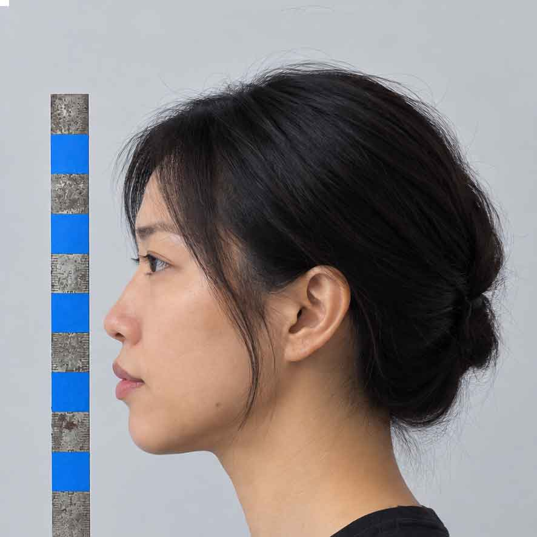
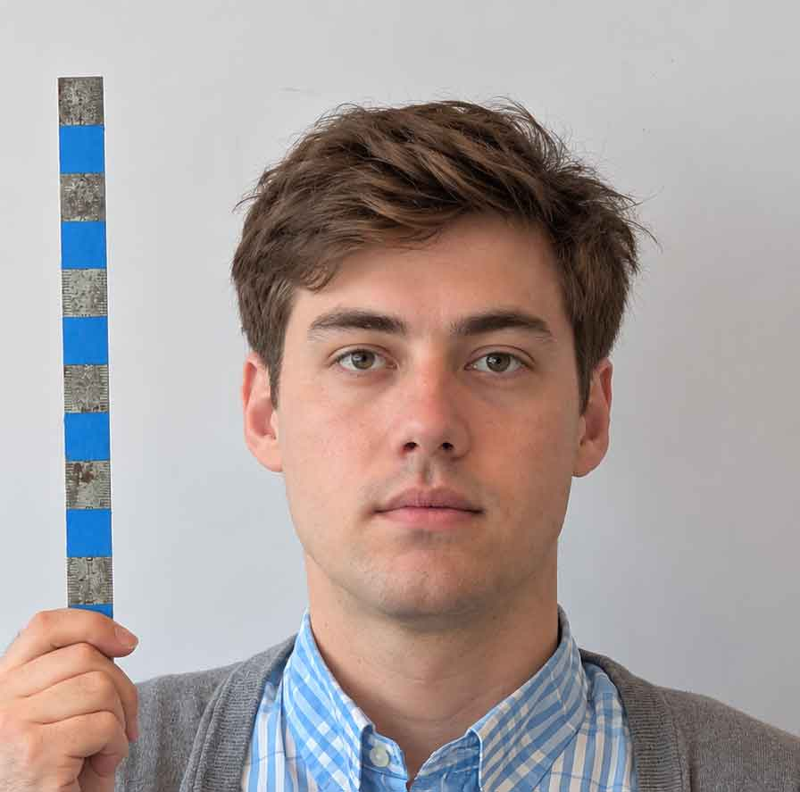
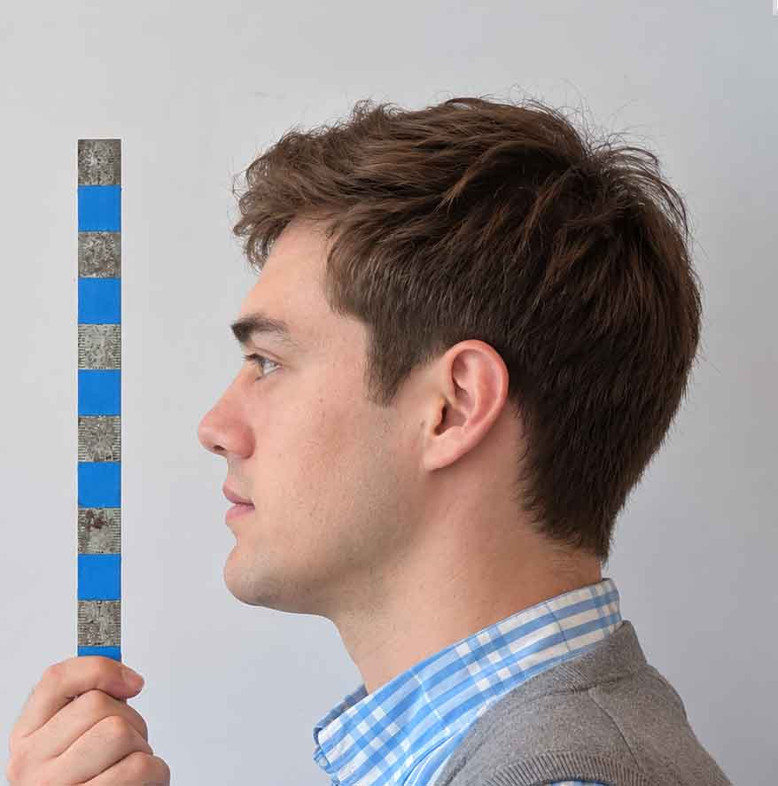
Everything here is optional, but handy if you want to practice between sessions or set up Blender at home before day one.
Blender is free, open source, and available for a most Windows, Mac and Linux machines. Installing it at home is optional, but useful if you'd like to keep practicing between sessions.
Get BlenderBlender is best used with one hand on the keyboard. This cheat sheet includes the shortcuts we may use in class, including controlling the viewport, selection, and common transformations.
Download PDFExport Paper Model unfolds 3D geometry into a 2D pattern, including fold lines and numbered glue tabs. This add-on is one of many available from the Blender Extensions website. It has already been installed on Library computers, but you will need to install it separately if you want to use it elsewhere. From the extension page, select the "Get Add-on" button to downloads the extenstion's .zip file. Install it via the "Add-ons" tabs of the Edit > Preferences dialog, look for the "Add from file" option.
Export Paper Model documentation.
Export Paper ModelSpace is limited, and day two builds directly on the design you start on day one — so please plan to attend both sessions if you can.
Registration: Register
Materials for construction and decoration are provided on day two. Day two openings may be available same-day, with Halloween-themed patterns on hand for walk-ins.